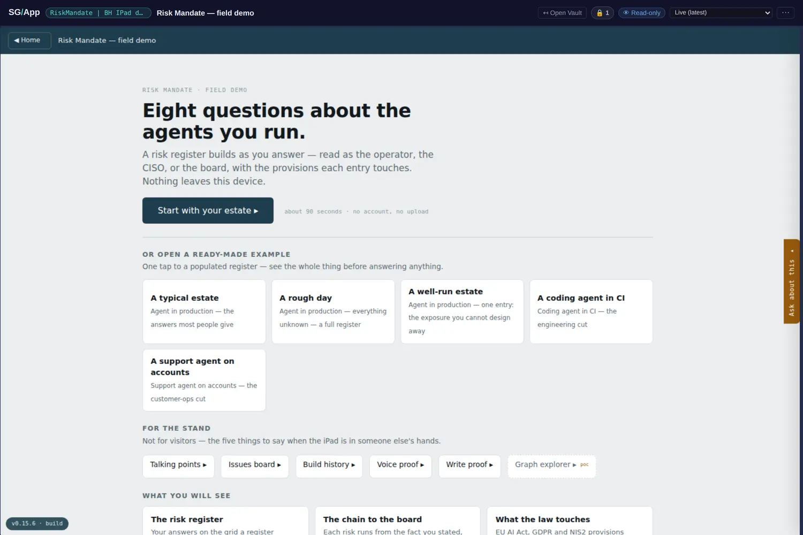
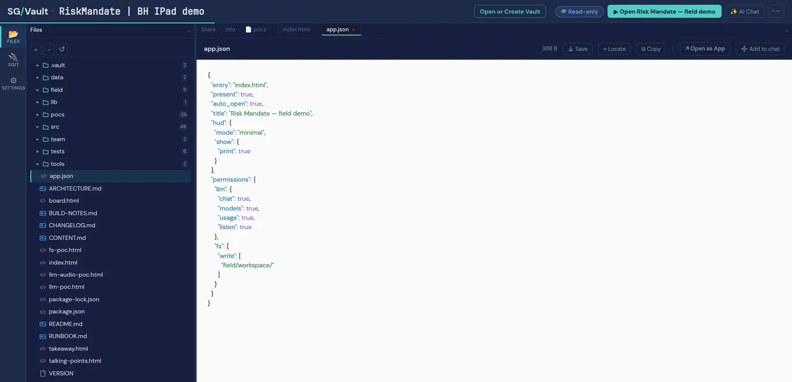
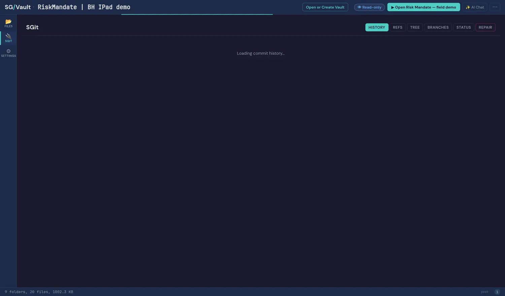

Risk Mandate, opened
A field demo built to be handed to a stranger on an iPad, and underneath it the most complete software project in the catalogue: 124 files, 98 commits, eight entry points, a test suite, build tooling and pinned releases, all inside one encrypted vault. It answers the question the other demos leave open — can you actually build something real in a vault — and it does the hardest thing safely: it uses an LLM without ever holding the API key.
The vault's own derived facts, last updated 6 August 2026. Quoted, not recounted.

It uses an LLM. It never holds the key.
The whole argument of this vault is in its app.json. The app is granted llm: chat, models, usage, listen and fs.write over field/workspace/ and nothing else. What is not granted is the credential. The OpenRouter key lives in .vault/llm/config.json as keySealed: {iv, ct}, encrypted under the vault key: the host decrypts it and makes the outbound call, and the app frame is handed a result, never a secret. Opened with the published read key, that field is ciphertext nobody outside can decrypt — and the publisher says they checked rather than assumed.
The vault's own phrasing is the sentence to take away: the app gets ops:llm-chat without ever getting bearer of the key. That distinction is usually impossible to express in a permission system, let alone enforce, because most systems only know how to hand over the credential and hope. Expressing it needs two different things to be nameable — the operation and the possession — which is a modelling problem before it is a security one, and it is this book's argument in a different domain: what a component is is what it can reach.

Ninety-eight commits, and releases pinned to them
This is not a document that happens to live in a vault; it is a software project developed in one. Ninety-eight commits, a test suite, build tooling, and .vault/releases.json pinning named releases (v0.15.5, v0.10.3, v0.7.7) to specific commit ids — which is exactly what the release selector in the app's chrome is reading. A version chip that resolves to a commit is a small thing that makes a large claim: the build you are looking at is identified, not described.

Two projects, one tripwire, arrived at separately
Its build script, tools/build.mjs, fails the build on any declarative external reference and on any credential-shaped string. This site's release gate does the same two things, and neither project copied the other. That is worth recording as more than a coincidence: two teams working on artefacts that travel — a vault handed over by key, a site published to a domain — independently concluded that the two things worth refusing at build time are a dependency you do not control and a secret you did not mean to ship.
When two implementations converge without contact, the shared part is usually the real constraint rather than either team's taste. It is the same evidence pattern as two parties agreeing about facts while disagreeing about meaning: the agreement is worth more precisely because it was not coordinated.
The audit, and the good kind of finding
Audited across all 124 files before the key was published: no credentials, no personal data, and the vault's own key does not appear in its content — the failure that forced a republish elsewhere in this catalogue. Two findings were published because they are the useful kind. The OpenRouter credential is present but sealed, so a read-key holder gets ciphertext. And the single hit the secret scanner produced was sk-test-abcdefghijklmnop in tests/suites/40-llm.mjs — a deliberately fake key in a test that asserts a reachable API key is caught.
A scanner hit that turns out to be a security test is a good sign about a codebase, and it is the same shape as a finding this site has published about itself: a tripwire firing on the exact string a document needs in order to teach people to recognise it. The lesson both times is that a scan with no false positives is not scanning hard enough — and that the fix is reading the hit, not loosening the rule.
Open it yourself
sgit clone sgit_rk1_a702fba803faac4369eb5d5a320b4dfa017af62bd2425fb298aac4b99e95c0ae:4zf6pf2zA one-way read key. The vault's own page carries the live embeds and the full audit note.
- Chapter 12 (what ships) gains the most complete shipped artefact in the estate: a real application with 98 commits, pinned releases and a test suite, developed and delivered as an encrypted vault.
- Chapter 8 (whose session is the agent using?) gains its positive case. That chapter asks what an agent may reach; this vault shows a capability granted (
ops:llm-chat) with the credential withheld, which is the shape the chapter argues for and had no instance of. - Chapter 16 (where this loses) gains a convergence worth reporting honestly: two independent builds refusing the same two things is evidence about the constraint, not about either team.
- The capability scale takes this vault as its interesting middle point.